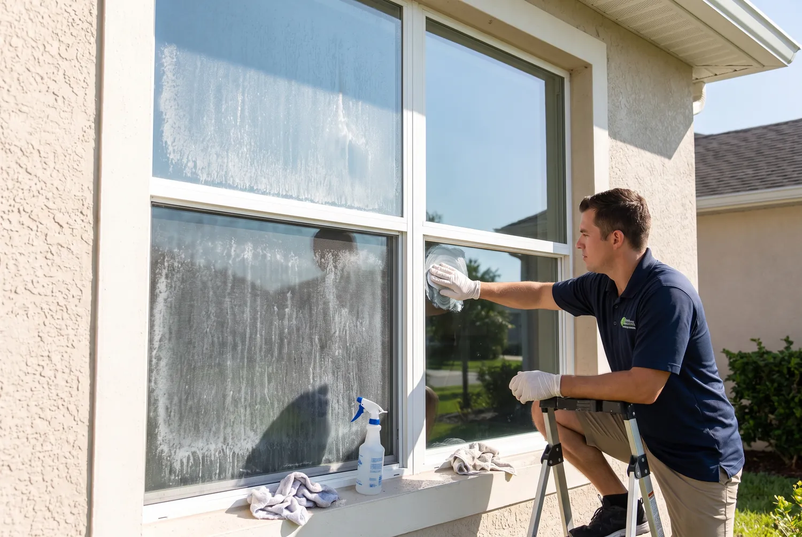
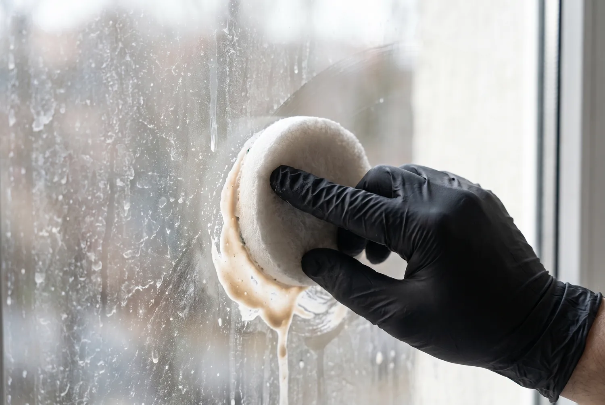

Hard Water Stain Removal for Windows in Jacksonville, FL
Hard water stain removal targets the cloudy, white mineral spotting that shows up on Jacksonville windows no matter how often you wipe them with regular glass cleaner. A pure-water treatment dissolves and lifts the mineral deposits that soap and squeegees alone cannot fully clear, restoring clear glass without scratching the surface.
Call Now for a Free Estimate
What Does Hard Water Stain Removal Involve?
The glass is first assessed to gauge how long the mineral buildup has been forming and whether it is still on the surface or has started to bond in. Treatment uses a two-stage purified water process: reverse osmosis strips out roughly 95 to 99 percent of dissolved solids like calcium and magnesium, and a second deionization stage removes what is left, producing water with almost no mineral content at all.
That ultra-pure water is worked into the stained areas with a soft brush, then rinsed and allowed to air-evaporate. Because there are no dissolved minerals left in the rinse water, it dries without leaving any new residue, which is the key difference from a standard soap-and-squeegee cleaning.
When Do You Need Hard Water Stain Removal?
This service makes sense once you notice white or cloudy spotting that stays put after a normal cleaning, particularly on windows near sprinkler heads, in bathrooms with humidity buildup, or on any glass that gets regular direct contact with municipal or well water. Homes in St. Johns County on well water tend to need this more often, since well water there commonly tests above 400 TDS, well above Jacksonville's municipal average of 150 to 300 TDS.

Why Does Hard Water Spotting Happen?
Water is never completely pure. It carries dissolved minerals, mainly calcium and magnesium, picked up from the ground or added during municipal treatment. When that water lands on glass and evaporates, the minerals it was carrying cannot evaporate with it, so they stay behind and slowly bond to the glass surface at a molecular level. A single splash barely matters, but repeated exposure from sprinklers, rain, or cleaning with tap water builds a visible film over weeks and months.
Traditional soap-based cleaning makes this worse over time, since soap surfactants and the minerals already in the rinse water both get left on the glass, giving new dirt and moisture something to grab onto right away.
What Affects the Cost of Hard Water Stain Removal in Jacksonville?
Pricing runs about $10 to $25 per pane depending on how severe the staining is and how long it has been building up. Light, recent spotting on the low end of that range clears quickly. Heavy, long-term deposits near the top of the range need more scrubbing time and sometimes a second pass to fully lift. Skylights and hard-to-reach glass are quoted separately, typically $15 to $35 each, because of the extra access work involved.

DIY Vinegar Treatment vs. Professional Pure-Water Removal: Which Do You Need?
A vinegar-and-water solution can handle light, recent hard water spotting if you are comfortable scrubbing it by hand and doing the work safely on a ladder. It works because the mild acid in vinegar helps break down fresh mineral deposits. For spotting that has been building for months, is on second-story glass, or has started to feel slightly rough to the touch, professional pure-water treatment is the more reliable option, since it fully strips the minerals from the rinse water instead of just diluting what is already on the glass.
Frequently Asked Questions
Can hard water stains be removed completely?
Most hard water spotting on Jacksonville windows can be fully cleared with a pure-water treatment, as long as it has not been left long enough to etch into the glass. Deposits that have been building for a year or more sometimes leave a faint permanent haze even after treatment.
Will regular window cleaning prevent hard water stains?
Regular cleaning slows the buildup but will not fully prevent it if sprinklers or rain are hitting the glass with hard water between visits. Switching to a pure-water finish during each cleaning helps because it leaves no mineral residue behind for new spots to attach to.
Is this treatment safe for tinted or coated windows?
Yes, the pure-water process is safe for standard tinted and low-E coated windows common in Jacksonville homes. It relies on purified water rather than abrasive chemicals, so it will not strip window film or coatings when done correctly.
Why does my sprinkler system cause window spotting?
Sprinkler heads that overspray onto ground-floor windows deposit the same dissolved minerals found in irrigation water directly onto the glass, and repeated daily watering means the spotting builds up far faster than rainfall alone would cause.
Get Your Glass Clear Again
Describe the spotting you are seeing and we will tell you what it will take to clear it.
Call (904) 944-7358